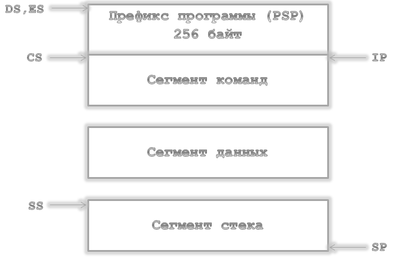
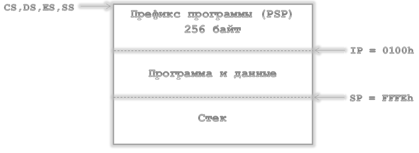

Распределение программы в памяти.
Рассмотрим распределение памяти на примере простейшей программы.
; Данные программы
DATA SEGMENT
MSG DB ‘Текст$’
DATA ENDS
STK SEGMENT STACK
DB 256 dup(?)
STK ENDS
; Код программы
CODE SEGMENT
ASSUME CS:CODE,DS:DATA,SS:STK
START:
MOV AX,DATA
MOV DS,AX |
|
MOV AH,09H |
; Вывод сообщения |
MOV DX,OFFSET MSG
INT 21H |
|
MOV AH,4CH |
; Завершение работы |
INT 21H
CODE ENDS
END START |
|
В этой программе явно описаны три сегмента – кода с именем
CODE, данных с именем DATA и стека с
именем STK. Директива ASSUME связывает имена этих
сегментов, которые в общем случае могут быть произвольными, с сегментными регистрами
CS , DS и SS соответственно. Распределение памяти при
загрузке программы на исполнение показано ниже:
- Распределение в памяти ЕХЕ программы.

- Распределение в памяти СОМ программы.

После инициализации в регистре IP находится смещение первой команды программы
относительно начала кодового сегмента, адрес которого помещен в регистр CS.
Процессор, считывая эту команду, начинает выполнение программы, постоянно изменяя
содержимое регистра IP и при необходимости CS для получения кодов
очередных команд. DS после загрузки программы установлен на начало PSP,
поэтому для его использования в первых двух командах программы выполняется загрузка
DS значением сегмента данных.
EXE- и COM-программы.
DOS может загружать и выполнять программные файлы двух типов – COM и EXE.
Ввиду сегментации адресного пространства процессора 8086 и того факта, что
переходы (JMP) и вызовы (CALL) используют относительную адресацию,
оба типа программ могут выполняться в любом месте памяти. Программы никогда не пишутся в
предположении, что они будут загружаться с определенного адреса (за исключением некоторых спец. программ).
Файл COM-формата – это двоичный образ кода и данных программы. Такой
файл может занимать менее 64K.
Файл EXE-формата содержит специальный заголовок, при помощи которого загрузчик
выполняет настройку ссылок на сегменты в загруженном модуле.
Заголовок EXE-файла.
Заголовок EXE-файла состоит из форматированной зоны и таблицы расположения сегментов
(Relocation Table).
Форматированная зона выглядит следующим образом:
| (0)2 |
signature |
два байта 'MZ' (4Dh, 5Ah), индентифицирующие файл в формате EXE |
| (+2)2 |
part_pag |
длина последней страницы программы в байтах (страница содержит 512 байт) |
| (+4)2 |
filesize |
размер программы в страницах по 512 байт |
| (+6)2 |
relitem |
число элементов в таблице расположения сегментов |
| (+8)2 |
hdr_size |
размер заголовка файла в параграфах (длина параграфа -16 байт) |
| (+10)2 |
min_mem |
минимальное количество памяти в параграфах, которое нужно зарезервировать
в памяти за концом загруженной программы |
| (+12)2 |
max_mem |
максимальное количество памяти в параграфах, которое нужно зарезервировать в
памяти за концом загруженной программы |
| (+14)2 |
ss_reg |
величина смещения от начала программы, которая используется для загрузки
сегментного регистра стека SS |
| (+16)2 |
sp_reg |
величина смещения от начала программы, которая используется для загрузки
регистра SP |
| (+18)2 |
chk_summ |
контрольная сумма всех слов в файле |
| (+20)2 |
ip_rcg |
значение для регистра IP, которое будет использовано при
начальном запуске программы |
| (+22)2 |
cs_reg |
смещение от начала программы для установки сегментного регистра кода CS |
| (+24)2 |
relt_off |
смещение от начала файла таблицы расположения сегментов программы |
| (+26)2 |
overlay |
номер оверлея, равен 0 для основного модуля |
Таблица расположения сегментов программы начинается сразу после форматированной области
и состоит из четырехбайтовых значений в формате "смещение:сегмент".
Область файла после таблицы расположения сегментов выравнивается на границу параграфа
с помощью байта-заполнителя, и дальше начинается сама программа.
Описание структуры заголовка EXE файла и таблицы расположения сегментов.
typedef struct _EXE_HDR_ {
unsigned signature;
unsigned part_pag;
unsigned file_size;
unsigned rel_item;
unsigned hdr_size;
unsigned min_mem;
unsigned max_mem;
unsigned ss_reg;
unsigned sp_reg;
unsigned chk_summ;
unsigned ip_reg;
unsigned cs_reg;
unsigned relt_off;
unsigned overlay;
} EXE_HDR;
typedef struct _RELOC_TAB_ {
unsigned offset;
unsigned segment;
} RELOC_TAB
Процесс загрузки программ в память.
Загрузка COM- и EXE-программ происходит по-разному, однако есть некоторые
действия, которые операционная система выполняет в обоих случаях одинаково.
Определяется наименьший сегментный адрес свободного участка памяти для загрузки программы
(обычно DOS загружает программу в младшие адреса памяти, если при редактировании
не указана загрузка в старшие адреса).
Создаются два блока памяти - блок памяти для переменных среды и блок памяти
для PSP и программы.
В блок памяти переменных среды помещается путь файла программы.
Заполняются поля префикса сегмента программы PSP в соответствии с характеристиками
программы (количество памяти, доступное программе, адрес сегмента блока памяти, содержащего
переменные среды и т.д.)
Устанавливается адрес области Disk Transfer Area (DTA) на вторую половину
PSP (PSP:0080).
Анализируются параметры запуска программы на предмет наличия в первых двух параметрах
идентификаторов дисковых устройств. По результатам анализа устанавливается содержимое
регистра AX при входе в программу. Если первый или второй параметры не содержат
правильного идентификатора дискового устройства, то соответственно в регистры AL
и AH записывается значение FF.
А дальше действия системы по загрузке программ форматов COM и EXE
будут различаться.
Для COM-программ:
Для COM-программ, которые представляют собой двоичный образ односегментной
программы, выполняется чтение файла программы с диска и запись его в память по
адресу PSP:0100. Вообще говоря, программы типа COM могут состоять из
нескольких сегментов, но в этом случае они должны сами управлять содержимым сегментных
регистров, используя в качестве базового адреса адрес PSP.
После загрузки файла операционная система для COM-программ выполняет следующие
действия:
- сегментные регистры CS, DS, ES, SS устанавливаются на начало PSP;
- регистр SP устанавливается на конец сегмента PSP;
- вся область памяти после PSP распределяется программе;
- в стек записывается слово 0000;
- указатель команд IP устанавливается на 100h (начало программы) с
помощью команды JMP по адресу PSP:100.
Для EXE-программ:
Загрузка EXE-программ происходит значительно сложнее, так как связана с
настройкой сегментных адресов:
- Считывается во внутренний буфер DOS форматированная часть заголовка файла.
- Определяется размер загрузочного модуля по формуле:
size=((file_size*512)-(hdr_size*16)-part_pag
- Определяется смещение начала загрузочного модуля в EXE-файле как
hdr_size*16.
- Вычисляется сегментный адрес для загрузки START_SEG, обычно используется
значение PSP+100h.
- Загрузочный модуль считывается в память по адресу START_SEG:0000.
- Сканируются элементы таблицы перемещений, располагающейся в EXE-файле
со смещением relt_off.
- Для каждого элемента таблицы:
- Считывается содержимое элемента таблицы как два двухбайтных слова (OFF,SEG).
- Вычисляется сегментный адрес ссылки перемещения
REL_SEG = (START_SEG + SEG)
- Выбирается слово по адресу REL_SEG:OFF, к этому слову прибавляется
значение START_SEG, затем сумма записывается обратно по тому же
адресу.
- Заказывается память для программы, исходя из значений min_mem и max_mem.
- Инициализируются регистры, и программа запускается на выполнение.
При инициализации регистры ES и DS устанавливаются на PSP,
регистр AX устанавливается так же, как и для COM-программ, в сегментный
регистр стека SS записывается значение START_SEG + ss_reg, а в
SP записывается sp_reg.
- Для запуска программы в CS записывается START_SEG+cs_reg, а в IP - ip_reg.
Такая запись невозможна напрямую, поэтому операционная система сначала записывает
в свой стек значение для CS, затем значение для IP и после этого выполняет
команду дальнего возврата RETF (команда возврата из дальней процедуры).
Префикс программного сегмента .
| (0)2 |
int 20h |
двоичный код команды int 20h (программы могут использовать эту
команду для завершения своей работы) |
| (+2)2 |
mem_top |
нижняя граница доступной памяти в системе в парафафах |
| (+4)1 |
reserv1 |
зарезервировано |
| (+5)5 |
call_dsp |
команда вызова FAR CALL диспетчера MS-DOS |
| (+10)4 |
tcrm_adr |
адрес завершения (Terminate Address) |
| (+14)4 |
cbrk_adr |
адрес обработчика Ctrl-Break |
| (+18)4 |
crit_err |
адрес обработчика критической ошибки |
| (+22)2 |
pam psp |
сегмент PSP программы, запустившей данную
программу (программы-родителя)SS |
| (+24)20 |
file_tab |
таблица открытых файлов, если здесь находятся байты 0FFH,
то таблица не используется |
| (+44)2 |
env_seg |
сегмент блока памяти, содержащего переменные среды |
| (+46)4 |
ss_sp |
адрес стека SS:SP программы |
| (+50)2 |
max_open |
максимальное число открытых файлов |
| (+52)4 |
file_tba |
адрес таблицы открытых файлов |
| (+56)24 |
reserv2 |
зарезервировано |
| (+80)3 |
disp |
диспетчер функций DOS |
| (+83)9 |
reserv3 |
зарезервировано |
| (+92)16 |
fcb1 |
форматируется как стандартный FCB, если первый аргумент
командной строки содержит правильное имя файла |
| (+108)20 |
fcb2 |
заполняется для второго аргумента командной строки аналогично fcb1 |
| (+128)1 |
p_size |
число значащих символов в неформатированной области параметров,
либо буфер обмена с диском DTA, назначенный по умолчанию |
| (+129)127 |
parm |
неформатированная область параметров, заполняется при запуске программы
из командной строки |
Структура PSP.
typedef struct _PSP_ {
unsigned char int20h[2];
unsigned mem_top;
unsigned char reserv1;
unsigned char call_dsp[5];
void far *term_adr;
void far *cbrk_adr;
void far *crit_err;
unsigned parn_psp;
unsigned char file_tab[20];
unsigned env_seg;
void far *ss_sp;
unsigned max_open;
void far *file_tba;
unsigned char reserv2[24];
unsigned char disp[3];
unsigned char reserv3[9];
unsigned char fcb1[16];
unsigned char fcb2[20];
unsigned char p_size;
unsigned char parm[127];
} PSP;
Программы могут получить из PSP такую информацию, как параметры командной строки при
запуске, размер доступной памяти, найти сегмент области переменных среды и т.д.
Как программе узнать адрес своего PSP?
Очень просто сделать это для программ,
написанных на языке ассемблера: при запуске программы этот адрес передается ей через
регистры DS и ES. То есть этот адрес равен DS:0000 или ES:0000
(для COM-программ на PSP указывают также регистры CS и SS).
EXE-программы.
EXE-программы содержат несколько программных сегментов, включая сегмент кода,
данных и стека. В процессе загрузки считывается информация заголовка EXE в
начале файла и выполняется перемещение адресов сегментов. Это означает, что ссылки типа
mov ax,data_seg
mov ds,ax
и
call my_far_proc
должны быть приведены (пересчитаны), чтобы учесть тот факт, что программа была загружена
в произвольно выбранный сегмент.
После перемещения управление передается загрузочному модулю посредством инструкции далекого
перехода (FAR JMP) к адресу CS:IP, извлеченному из заголовка EXE.
В момент получения управления программой EXE -формата:
- DS и ES указывают на начало PSP
- CS, IP, SS и SP инициализированы значениями, указанными в заголовке
EXE
- поле PSP MemTop (вершина доступной памяти системы в параграфах) содержит
значение, указанное в заголовке EXE. Обычно вся доступная память распределена
программе
COM-программы.
COM-программы содержат единственный сегмент . Образ COM-файла считывается с
диска и помещается в память, начиная с PSP:0100h. В общем случае, COM-программа
может использовать множественные сегменты, но тогда она должна сама вычислять сегментные
адреса, используя PSP как базу.
COM-программы предпочтительнее EXE-программ, когда дело касается небольших
ассемблерных утилит. Они быстрее загружаются, ибо не требуется перемещения сегментов, и
занимают меньше места на диске, поскольку заголовок EXE и сегмент стека отсутствуют
в загрузочном модуле.
После загрузки двоичного образа COM-программы:
- CS, DS, ES и SS указывают на PSP;
- SP указывает на конец сегмента PSP (обычно 0FFFEH, но может быть
и меньше, если полный 64K сегмент недоступен);
- слово по смещению 06H в PSP (доступные байты в программном сегменте)
указывает, какая часть программного сегмента доступна;
- вся память системы за программным сегментом распределена программе;
- слово 00H помещено (PUSH) в стек;
- IP содержит 100H (первый байт модуля) в результате команды
JMP PSP:100H.
Выход из программы.
Завершить программу можно следующими способами:
- через функцию 4CH (EXIT) прерывания 21H в любой момент,
независимо от значений регистров;
- через функцию 00H прерывания 21H или прерывание INT 20H,
когда CS указывает на PSP.
Функция DOS 4CH позволяет возвращать родительскому процессу код выхода,
который может быть проверен вызывающей программой или командой COMMAND.COM "IF
ERRORLEVEL".
Можно также завершить программу и оставить ее постоянно резидентной (TSR),
используя либо INT 27H , либо функцию 31H (KEEP) прерывания
21H.
Последний способ имеет те преимущества, что резидентный код может быть длиннее 64K,
и что в этом случае можно сформировать код выхода для родительского процесса.